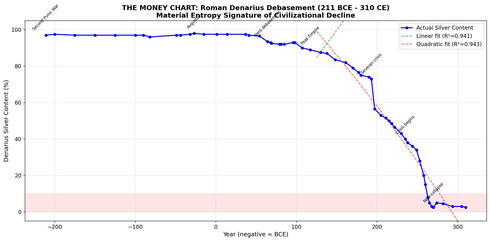
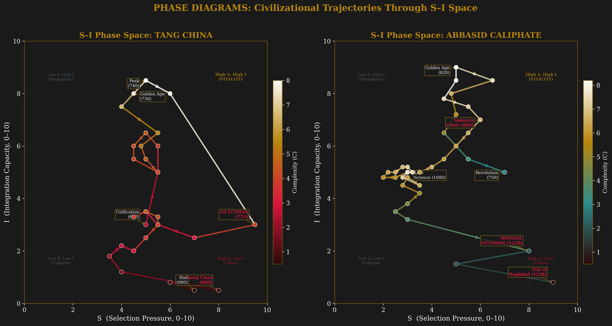
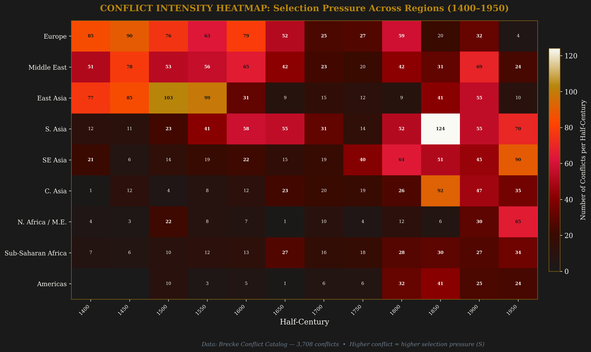

The original framework proposes that civilizational complexity (C) grows according to:
Where S = Selection Pressure (competition, merit, contestability), I = Integration Capacity (trust, synthesis, mobility, tolerance), and γC² = entropic drag that grows quadratically with accumulated complexity.
The data performed surgery on this. Selection pressure alone has a negative coefficient with complexity change. The revised equation elevates Integration to primary driver:
Sc = constructive selection (merit, exams, competition). Sd = destructive selection (war, purges). μ(I)·C = maintenance capacity. ρ·Cmem = civilizational memory.
The strongest empirical result: in every civilization tested, the S×I engine peaks before its complexity output does. The lag between peak engine and peak output scales with system size.

| CIVILIZATION | PEAK S×I | PEAK C | LAG | SYSTEM SIZE |
|---|---|---|---|---|
| Rome | 25 BCE | 125 CE | 150 yr | Mediterranean |
| Dutch Republic | 1600 | 1650 | 50 yr | Small nation |
| England | 1800 | 1850 | 50 yr | Medium nation |
| Song China | 1000 | 1100 | 100 yr | Subcontinent |
| Tokugawa Japan | 1600 | 1700 | 100 yr | Archipelago |
| Tang China | 750 | 740 | ~0 yr | Simultaneous |
| Abbasid | 810 | 820 | 10 yr | Pan-regional |
If American S×I peaked circa 1995-2005 (end of Cold War competitive pressure + peak institutional trust + pre-polarization), the complexity peak arrives 2025-2045.
Two empires separated by 1,700 years. Same entropic signature. The denarius lost 94% of its silver content over 500 years. Sterling lost 97% of its purchasing power over 300 years. The physics is the same: when maintenance cost exceeds creative output, the state eats its own monetary infrastructure.


Rome's decline operated through four channels simultaneously: material (debasement), institutional (inequality ratchet), reproductive (population collapse from 61M to 25M), and spiritual (literary output collapse).

The original framework gives S and I equal weight. The data says Integration does ~65% of the work. European homicide rates declined from 14.7 per 100,000 in 1250 to 0.8 by 1912, a 94% drop that tracks complexity growth almost perfectly. Lower violence = higher trust = higher integration = higher complexity.


Peak civilizations cluster in the upper-right of S-I space (high integration, moderate-to-high constructive selection). Crisis points cluster at bottom-right (high destructive S, collapsed I). Tokugawa sits alone at left (low S, moderate I = maintenance without growth).

How civilizations move through S-I space over time. Each traces a distinctive path, but they all share the same terminal dynamics: declining I while S either collapses (Dutch, Ottoman) or spikes destructively (Rome, Tang, Abbasid).


Selection pressure visualized across 600 years and 9 regions. Brecke Conflict Catalog: 3,708 conflicts.

Seven data-driven revisions to the framework, ordered by analytical priority:
| # | REVISION | EVIDENCE |
|---|---|---|
| 1 | Decompose S into constructive (Sc) and destructive (Sd) | Pooled S coef = −0.52 (p=0.027) |
| 2 | Elevate I to primary driver, S as amplifier | I explains more variance than S×I interaction |
| 3 | Add maintenance term μ(I)·C (Tokugawa puzzle) | C maintained at 7/10 with S×I ≈ 12 for 200yr |
| 4 | Lag is f(system size), not constant | 50yr (Dutch) to 150yr (Rome) |
| 5 | Add civilizational memory ρ·Cmem | Each Chinese dynasty reaches higher peak C |
| 6 | Entropy ratchet: E(t) ≥ E(t−1) within regime | No entropy reversal without regime change |
| 7 | Absorb D (Diversity) into I (Integration) | No independent data support for C×D term |
| REGIME | CONDITION | EXAMPLES |
|---|---|---|
| Growth | α·I·(1+β·Sc) > γC² | Republican Rome, Song China, Dutch Golden Age, Industrial England |
| Maintenance | μ(I)·C ≈ γC² | Tokugawa Japan, Late Principate Rome, Qing China 1700-1800 |
| Decline | γC² > all positive terms | Crisis of Third Century, Post-An Lushan Tang, Late Dutch Republic |